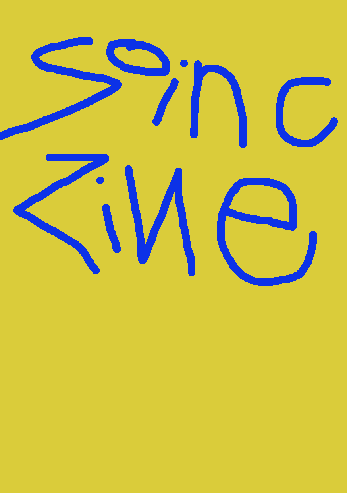
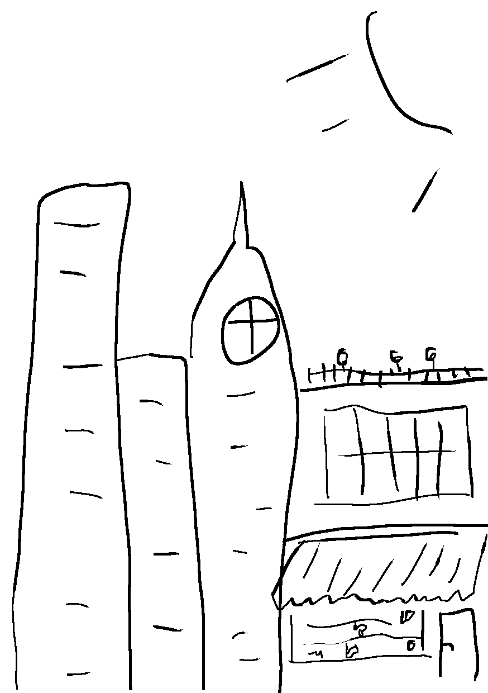

Soinc Zine (2026)

Bête de nuit (2026)
Première soirée dans la ville où vous venez d’emménager. Dans l’idée de vous fondre dans la foule et rencontrer du monde, vous hésitez entre vous rendre à la taverne ou partir explorer ce que la maison close a à offrir . Après tout, il s’agit là aussi de rencontre…
Rien de bien spécial ici. La taverne ressemble à toutes celles que vous avez déjà fréquenté. Elle dispose de son lot de mauvaises fréquentations dans une épaisse fumée. Serez-vous tenté.e par son mystérieux “Tord-Boyaux maison” ou par votre boisson préférée : la Citronnade
Séparé du tumulte des orgies par d’épais rideaux, vous pénétrez chez l’oracle qui vous fait immédiatement part de ses inquiétudes vis-à-vis d’une mort iminente. Le croyez-vous et décidez d’aller visiter le cimetière demain ou laissez-vous tomber ce baratin pour lui faire des avances voyant bien que ses véritables talents sont ailleurs ?
Absolument pas décontenancé par ce breuvage aussi trouble que fort, vous lancez un impétueux “la petite soeur" au tenancier ! Malheureusement le deuxième bock ne se passe pas aussi bien et vous tombez ivre mort.e au sol à peine l’avoir fini…
Recommencer l'aventure
Recommencer l'aventure
Directement après votre arrivée devant la grange, vous êtes accueilli par un grondement puissant vous glaçant le sang et le cadavre pourrissant de ce qui semble être une grande dinde. Deux choix s’offrent à vous, une confrontation directe ou une approche plus discrète et stratégique quitte à fuir si cela paraît trop dangereux
Vous vous réveillez tout groggy allongé sur le sol humide de rosée. En ouvrant les yeux vous voyez une tombe avec votre nom gravé dessus. Pris de panique vous la renversez, révélant ainsi un énorme rubis parmi ses débris. Vous êtes désormais riche et vous demandez comment tout dépenser en ville ce soir ! (et comment quitter cet étrange cimetière…)
Recommencer l'aventure
Recommencer l'aventure
L’établissement tient ses promesses. Tout y inspire la volupté et ses recoins doux y encouragent le libertinage… Un seul élément ne semble pas être à sa place et vous attire : une petite tente de voyant.e au fond du hall, y aller vous ou préférez-vous ne pas changer vos plans initiaux et trouver de la compagnie pour une nuit polissone ?
Intrigué par cette requête, le tavernier vous interpelle en tendant la boisson : “J’y ai pas écrit xxx sur la carte pour rien, c’est de la mixture de costaud.e que j’ai là. Allez donc voir la personne qui traîne à la sortie, elle cherche des aventurier.es.” Vous suivez ses conseils ou restez encore un peu au bar ?
Vous ne regrettez pas ce choix tant cet.te partenaire est à votre goût. Ou bien est-ce juste son doigté précis don’t iel fait preuve qui donne cette impression ? En tout cas vous ressortez de cette entrevue avec l’esprit aussi libre que la bourse vide. Mais à peine dehors, une silhouette vous interpelle…
Refroidi par autant de danger vous refusez la mission. Mais le messager pensant que vous mentez pour garder tout le butin préfère vous mettre hors d’état de mener ce projet ou de divulguer les informations, vous plante sa lame dans l’abdomen et vous abandonne mourant.e sur les pavés. Augmentant ainsi le nombre d’infortuné.es englouti.es par l’avidité de la cité…
Recommencer l'aventure
Recommencer l'aventure
Prenant votre courage à pleines mains, vous foncez dans l’obscurité de la grange avant d’être stoppé.é net par le déclenchement d’un piège à loup posé par le fermier. Esperons que vous vous viderez de votre sang avant que la bête de vienne vous dévorer vivant.e…
Recommencer l'aventure
Recommencer l'aventure
Pas de doute, la recette de la citronnade est parfaitement maîtrisée ici ! De quoi satisfaire cette bonne petite soirée comme vous les aimez. Peut-être même parviendrez-vous à finir votre livre avant de vous coucher de bonne heure et être frai.che pour votre première journée avec la nouvelle équipe que vous intégrez demain !
Recommencer l'aventure
Recommencer l'aventure
Une ombre rôde effectivement aux abords du bâtiment et sans se présenter vous propose : “J’ai eu vent de source sûre qu’un fermier voisin a un problème de parasite dans sa grange, sa récompense couplée au gain que représente la capture d’une bête selon lui aussi mythique que dangereuse n’est pas des moindres…” Vous en êtes ou vous vous débinez
En contournant le bâtiment vous apercevez une ouverture et en scrutant à l’intérieur découvrez que le bruit vient en fait d’une portée de chatons ronronnants. Visiblement abandonnés vous les prenez avec vous pour les soigner et choyer. N’est-il pas meilleure récompense à votre acte de bravoure que ces nouveaux compagnons tout doux ?!
Recommencer l'aventure
Recommencer l'aventure
